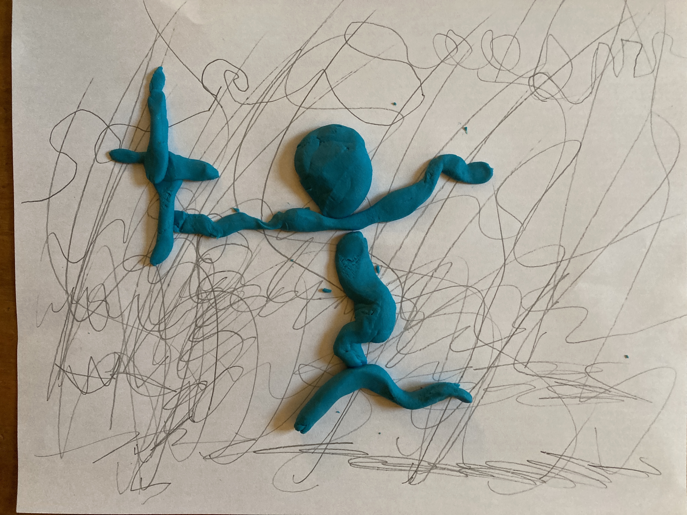
Deck
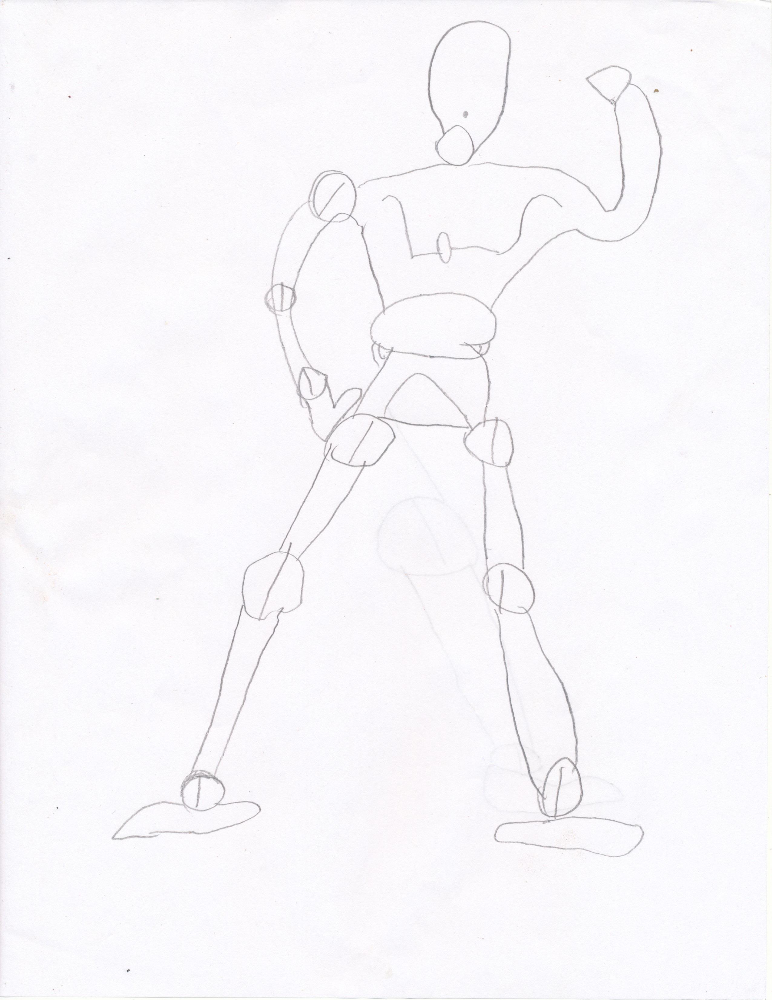
Figure Study
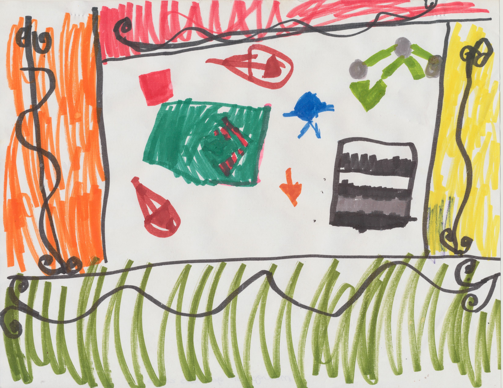
Musings on Gelatinous Cubes
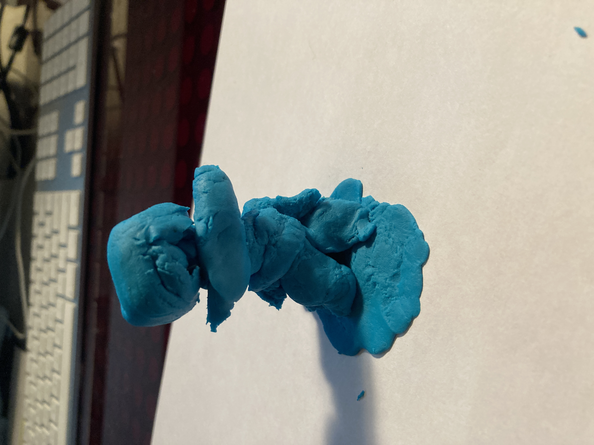
Man
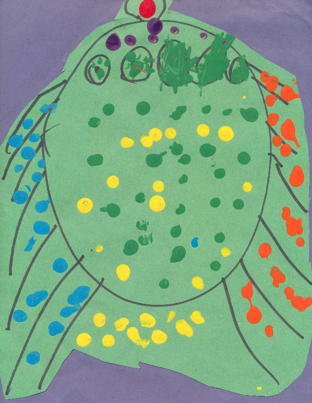
Bug
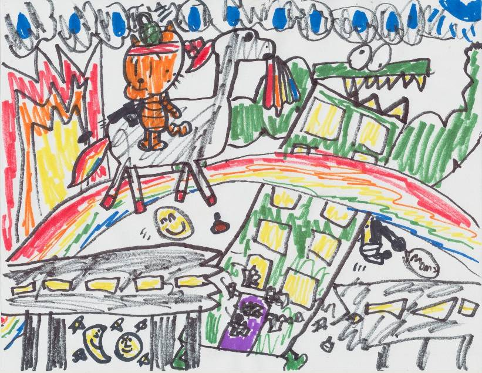
Bad Kitty
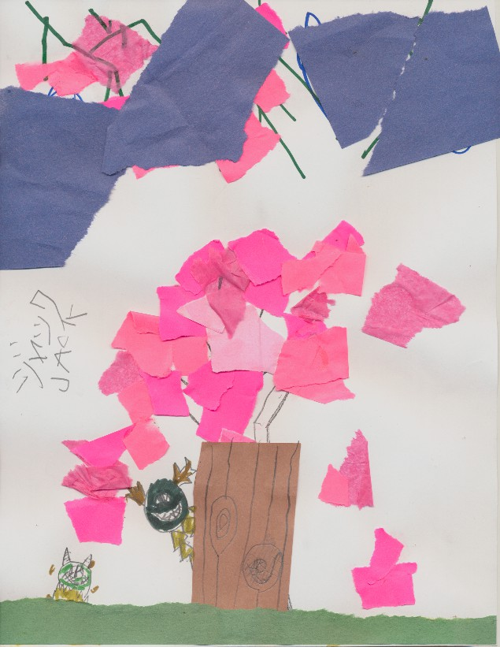
Cherry Blossoms
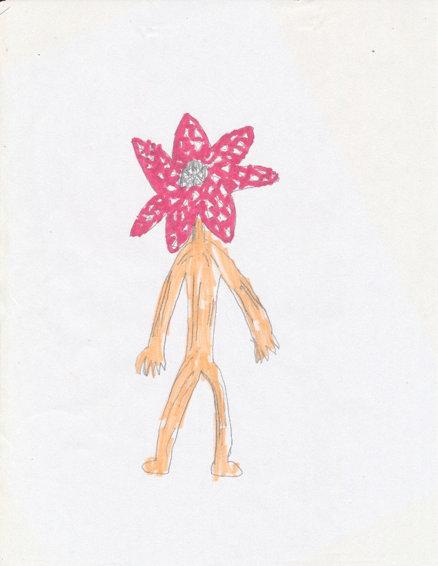
Demi Gorgon One
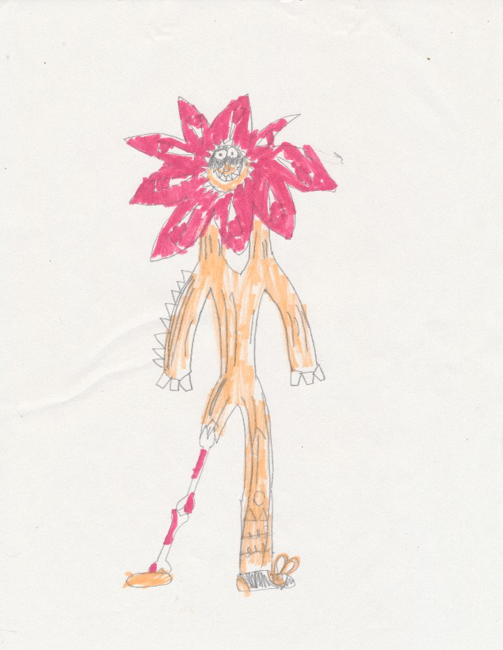
Demi Gorgon Two
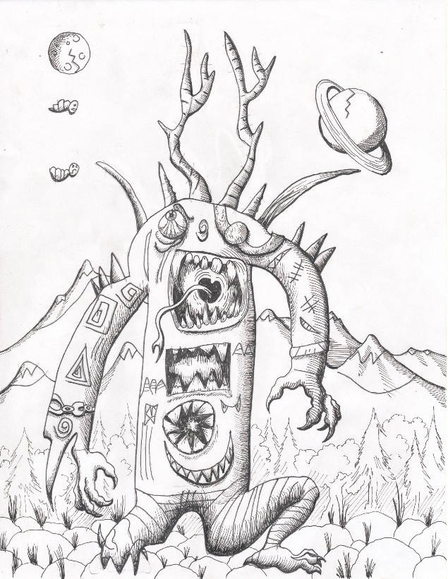
Halloween Monster
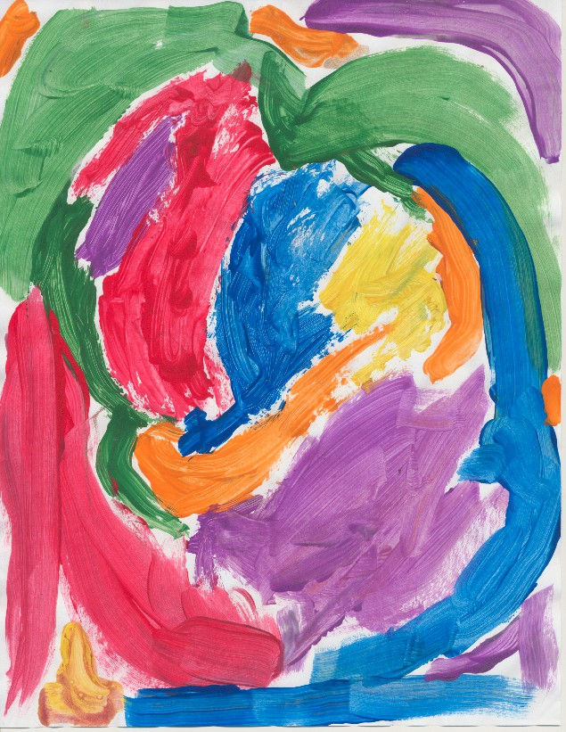
Happy Colors
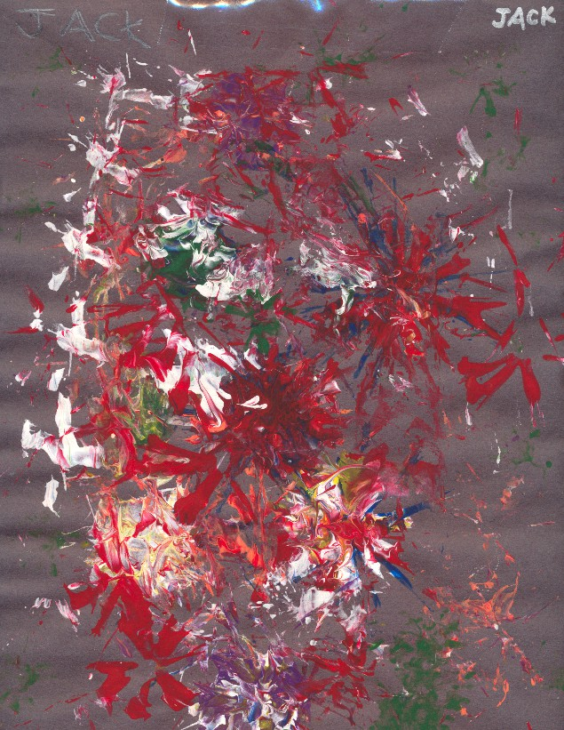
Jackson Pollock Study
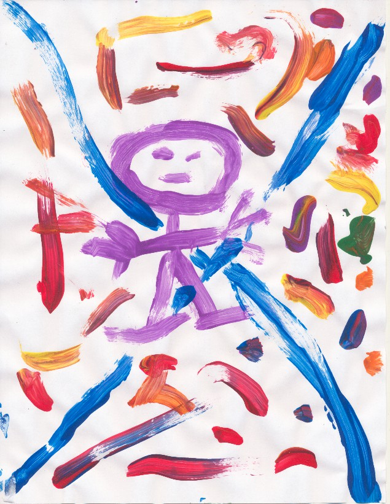
Spiritual Man
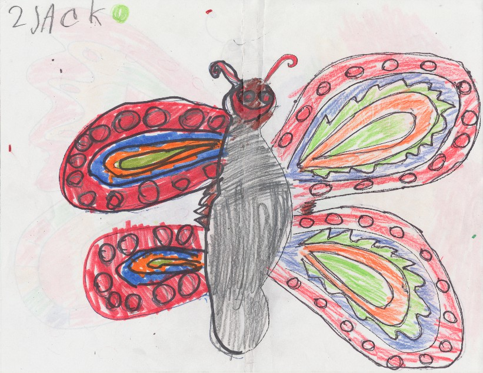
Butterfly
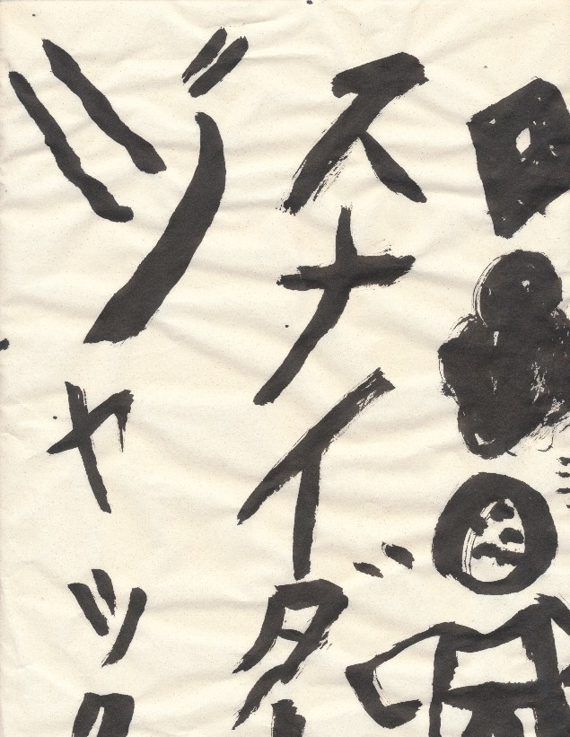
Upset Samurai
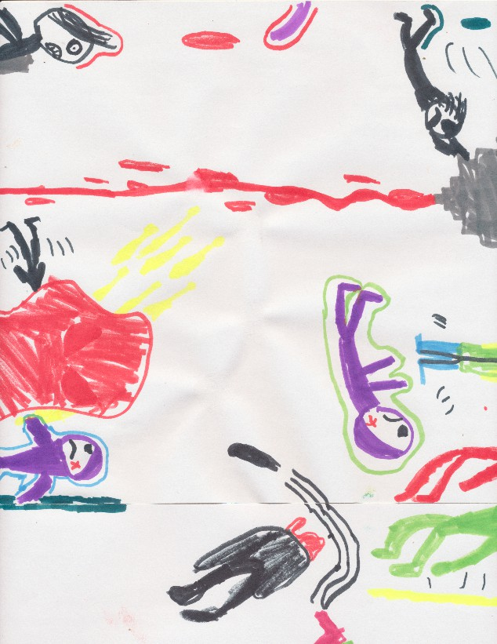
Chaos & Despair
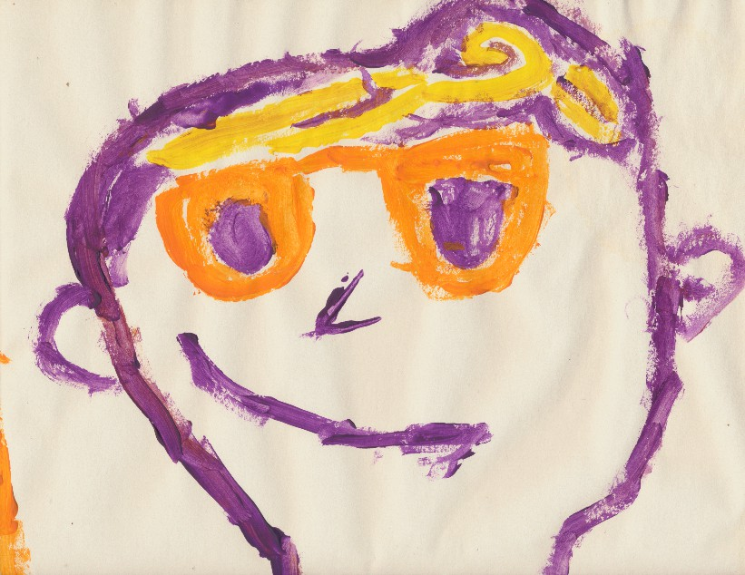
self portrait
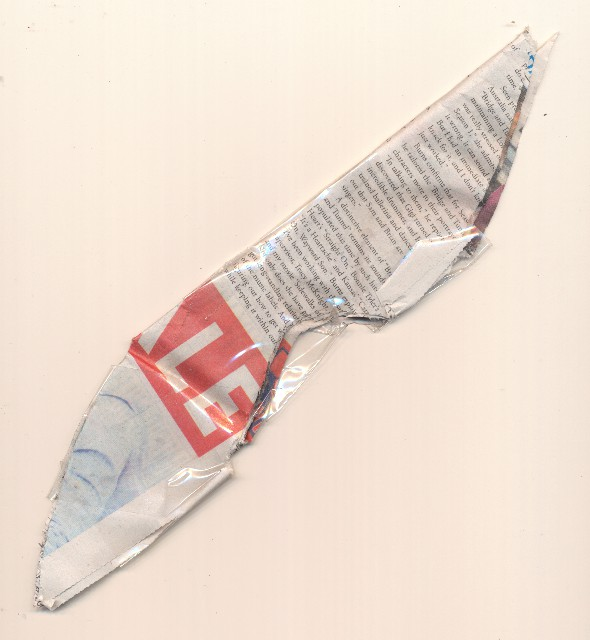
Double Blade - Forged in the japanese style